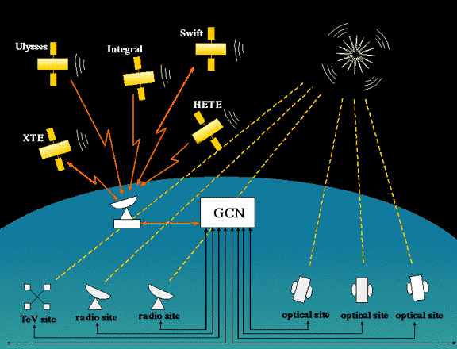

National Aeronautics and
Space Administration
Space Administration
General
Coordinates
Network
NASA’s Next Generation Time-Domain and Multimessenger Alert System
A service of the Astrophysics Science Division at NASA’s Goddard Space Flight Center
Realtime Alerts
Born of Necessity

